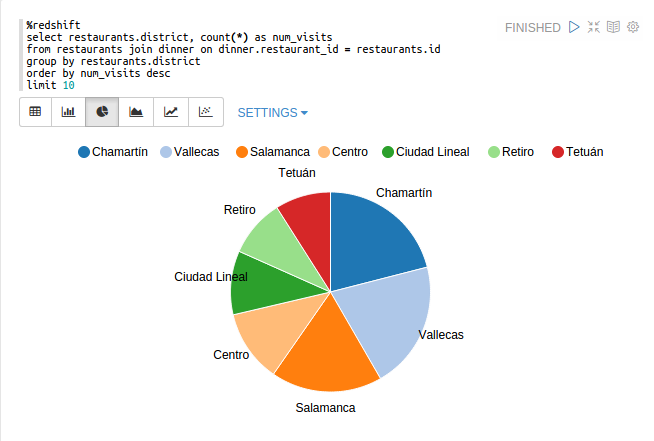
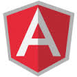
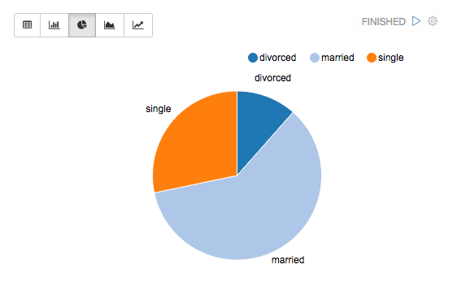

Multi-purpose Notebook
The Notebook is the place for all your needs
- Data Ingestion
- Data Discovery
- Data Analytics
- Data Visualization & Collaboration

Infrastructure
Provide infrastructure was never easier
 Apache Spark
Apache Spark Apache Hadoop
Apache Hadoop AWS Redshift
AWS Redshift

Connectors
Many connectors is available
- Apache Spark
- Apache Hive
- Redshift
 Luigi
Luigi
 Scala
Scala-  Angular
 Shell
Shell- Comming more
...
Data visualization
Some basic charts are already included in DataSwarm. Visualizations are not limited to SparkSQL's query, any output from any language backend can be recognized and visualized.

Pivot chart
With simple drag and drop DataSwarm aggeregates the values and display them in pivot chart. You can easily create chart with multiple aggregated values including sum, count, average, min, max.